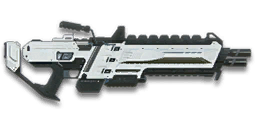

← Back to the XMG-100 comparison
Sage Guide · Nanite Systems Operatives · Heavy Assault
The gun every NSO Heavy Assault starts with. Auto-granted, no certs spent, no unlocks needed — this page teaches you to win fights with it today.
The one-line verdict: a fast-firing, big-magazine LMG that plays like a heavy assault rifle. It rewards good bursts and good positioning, and punishes long reloads and spray-and-pray. Fight between 10 and 40 metres and it will carry you.

The XMG-100 · Nanite Systems · 80-round magazine
Picture the scene, because you've probably lived it: you're sprinting across a courtyard, an enemy appears, and you do everything at once — hold the trigger down while you're still running, then press aim-down-sights (ADS) a split-second later, finger still down. The sight picture snaps in, it looks precise… and your bullets spray everywhere except the man in your crosshair. He kills you. It feels like the game cheated. It didn't — here's what actually happened.
You started firing from a sprint, from the hip. Sprinting is the least accurate state in the game: your cone of fire starts at 7.0° — fully bloomed, the widest it can ever be. Every shot you fire from the hip widens it further still (+0.10° per shot).
Then you pressed ADS mid-hold — and nothing reset. Aiming down sights does not shrink a cone of fire that is already bloomed. The scope only gives you a precise picture; the bullets keep flying out of the wide cone you built while running and hipfiring. That's the whole mystery: accurate-looking aim, wildly inaccurate gun.
Two timers stack the deck further: your gun needs about 0.3 s to settle after a sprint, and raising the sight itself takes ~0.15 s. Trigger held through all of it means your first half-second of fire is pure confetti.
1 · Feet. Let go of sprint (and the trigger, if you're already holding it). Stop, or drop into a strafe — anything but a full sprint.
2 · Sight. Press ADS and let the sight come up. This takes a heartbeat — that's fine, your overshield (F) covers it.
3 · Trigger. Now fire. Starting from the aimed cone of 0.10°, your first shots land where the dot points, and you control the bloom from zero instead of inheriting a maxed-out cone.
Stop → aim → fire. If you take one habit from this entire page, take this one. You'll practise exactly this rhythm in the simulator in section 04.
Every enemy infantry has 1,000 health (500 shield + 500 health). Your bullet does 143 damage up close, fading to 112 at long range. Headshots count double, leg shots count less (×0.9). That gives you three numbers worth memorising:
| Range | Damage | Head | Chest | Legs | Chest vs shielded Heavy |
|---|---|---|---|---|---|
| Close · 0–15 m | 143 | 4 | 7 | 8 | 11 |
| Mid · 15–50 m | 143→125 | 4 | 8 | 9 | 12 |
| Far · 50–75 m+ | 125→112 | 5 | 9 | 10 | 13 |
Perfect-accuracy times to kill: 4 headshots ≈ 0.25 s, 7 chest shots ≈ 0.50 s up close. In real fights you'll land maybe half your rounds — still, this is why the head matters so much on this gun.
Full power to 15 m, then a steady slide to minimum at 75 m. The gold line shows Soft Point Ammunition, which stretches full power to 20 m; the green dotted line shows High Velocity Ammunition, which stretches minimum damage out to 95 m.
One gun, four fighting styles. The right technique changes with distance — use the range finder below to see what your bullets do at any range, then learn the four bands underneath it.
How to fight hereAim down sights at the upper chest and neck. Fire in bursts of 5–8 — your recoil climbs into the head for free damage. Start a touch low: the first shot kicks 2.5×.
Aim: centre of the chest, from the hip. Keep moving.
Scoping in costs you time and halves your move speed — at arm's length that gets you killed. The XMG-100 has the tightest standing hipfire of the four starter LMGs (a 2.5° cone), so trust it. Strafe side to side (A/D) while firing so you're hard to track, and let the overshield soak the return fire.
Aim: neck / upper chest. Bursts of 5–8 rounds.
This is where the gun earns its keep: full 143 damage to 15 m, mild recoil, fast handling. Start your crosshair at the upper chest — the natural upward climb walks your shots into the head, and 4 head hits end the fight in a quarter of a second. One warning: the first shot kicks 2.5×, the hardest of the four starters, so start a touch low. Strafe while scoped; you're slower, but a moving target still beats a still one.
Aim: chest. Bursts of 5–8 rounds, pause between them.
Damage is sliding toward 125 and your cone of fire blooms if you hold the trigger. Fire a burst, release for a split second to let accuracy reset, fire again. The recoil is nearly straight up (angle −1.5°/+1.5°, no sideways bias), so pull your mouse gently straight down. Crouch or stand still when you can — both tighten your shots.
Aim: chest. Taps of 3–5 rounds at exposed targets only.
At 112 damage you need 9 chest shots — a long, loud advertisement of your position — and your 500 m/s bullets are the slowest of the four starters, so moving targets need real lead. Take these shots at stationary or fleeing targets, medics reviving, and engineers on turrets. Otherwise, your better play is to close the distance behind cover. Knowing when not to shoot is a skill too.
Your accuracy is decided by two things before skill even enters it: what your body is doing (your stance sets the starting cone of fire) and what your finger is doing (holding the trigger grows that cone with every shot). The XMG-100 has no fire-mode switch — full-auto only — so "firing modes" are something you do with your finger, not a setting on the gun.
| Stance | Starting cone | What it means for you |
|---|---|---|
| Sprinting | 7.0° | Maxed out — the widest the cone can be. This is the section 01 disaster: never start firing from a sprint. |
| Hipfire, moving | 3.0° | Walking or strafing from the hip. Fine inside ~8 m, leaks rounds past the target beyond it. |
| Hipfire, standing | 2.5° | Your point-blank default — the tightest standing hipfire of the four starter LMGs. The 0.35 m ring at 8 m in section 05 is this stance drawn out. |
| Hipfire, crouched | 2.25° | The tightest hipfire you have (2.5° if you crouch-walk). Crouch when holding a doorway from the hip. |
| Aimed (ADS), feet planted | 0.10° | 25 times tighter than hipfire standing. This is why section 01's order matters. |
| Aimed (ADS), strafing | 0.40° + bloom | Four times wider than planted — but the first 6 shots of a strafe cost nothing extra, and you move at half speed (0.5×). Strafe between bursts to stay hard to hit; plant your feet during each burst. |
| Mode | How your finger does it | Use it at |
|---|---|---|
| The mag dump | Hold the trigger and don't let go | Point blank only, or suppressing a doorway. Bloom maxes out fast — past ~8 rounds you're spraying, not aiming, even with 80 rounds in the drum. |
| Bursts — the default | Hold for 5 rounds, release ~0.15 s, hold again. 6–8 rounds is fine while you're learning | Almost everything, 8–50 m. Each release resets the cone, so every burst starts at 0.10°. |
| Tap-fire | Short taps of 3–5, or single clicks, with a real pause between | 50 m and out, at exposed or stationary targets. Slow, but every round goes where the dot is. |
A target 30 m away, aiming down sights. Press and hold FIRE (mouse, touch, or hold Space with the button focused) and watch the holes walk wider the longer you hold — that's firing from an ever-growing cone. Release, let the cone reset, fire again. Aim for bursts of 5; 6–8 is tolerable while you're new. This practice window is shared by the whole Sage series: it's driven by a weapon profile plugged into the window — here the XMG-100's (714 RPM, 0.10° starting cone, 0.05° bloom per shot, target at 30 m) — and the spread is drawn at true scale from those numbers.
Cone of fire — fills as you hold, empties when you release.
Your bursts will be graded here — green at 5 rounds, tolerable up to 8.
Some things are easier to show than to say. Here's what your bullets actually do: how wide hipfire spreads at 8 metres, what a good burst rhythm looks like, and what the 2x sight really changes. The hands-on version — holding the trigger yourself — is the practice window in section 04.
A full-size target 8 m away — an arm's-length room fight. The rings show where hipfire rounds land around your aim point (the chest). Sizes are drawn to scale from the gun's real cone-of-fire numbers.
Read it this way: standing still, the 0.35 m ring sits inside the chest — most rounds hit a target this size, which is why hipfire works point-blank. But move and it grows to 0.42 m — as wide as the torso — so the edge rounds start leaking past him, and the rings only grow with distance while the man doesn't. Past ~10 m that's rounds missing entirely: the exact moment to switch to aiming down sights, where the spread shrinks to a dot. Crouch and the ring tightens to 0.31 m. (Ring sizes use the real geometry: spread diameter = 2 × distance × tan(cone ÷ 2).)
Every shot widens your cone of fire ("bloom"). Releasing the trigger for a heartbeat resets it. Same 18 rounds, two very different outcomes:
The target pattern is bursts of about 5 rounds — that's the ideal. Bursts of 6–8 are fine while you're new (call it newbie tolerance). Past that, the bloom (0.05° per shot aimed, 0.1° from the hip) keeps growing with every shot, so the extra bullets mostly decorate the wall behind your enemy instead of hitting him. Short bursts also leave you rounds for the second enemy — and with a 4.5-second reload, every round you save is a round you don't have to wait for.
No zoom. The target at 35 m is small but the view is wide open — you see the crate, the tower, and the next enemy coming. Fast to aim, nothing blocks your edges. Best inside ~40 m.
Same target, same 35 m — but he looks twice as tall, so placing shots on his chest and head gets much easier. The price: your view narrows to the round window, the crate and tower are gone, and close targets feel fast and huge. Best at 25–50 m.
That's the whole 30-cert decision from section 06 in one picture: 1x for awareness, 2x for precision. Most veterans carry both and swap per base — indoors 1x, open ground 2x.
Good news: your most important attachment — the ABLE 1.0 sight — is already on the gun, free. Everything below is an optional sidegrade, not an upgrade. Buy in the order shown and stop whenever the gun feels right.
A clean blue-dot reflex sight with no zoom. Your default, and honestly your best all-round option.
Good: everywhere indoors and out to ~40 m — which is most PlanetSide fights.
Bad: picking out targets past 50 m; that's what the 2x is for.
Extra reticle colours for the ABLE 1.0 cost 30 certs each — same price as the other ABLE optics below.
Doubles your view magnification. Costs almost nothing — the price of a few kills.
Good: open-field bases, tower fights, and your 25–50 m burst game. Swap between 1x and 2x per fight.
Bad: tight indoor rooms — the zoom makes close targets feel fast and huge.
Low-range thermal optic: enemies glow against a dark view, and it sees through smoke.
Good: night fights, smoky doorways, spotting infiltrators by their outline.
Bad: daytime and long range — its view is short-ranged and washes out in bright light.
Sniper-style magnification on an automatic LMG.
Good: almost nothing a beginner does — recoil magnifies too, and tunnels your vision.
Bad: any fight inside 30 m, which is where you'll spend your first hundred hours.
The XMG-100's vertical recoil is already mild (0.35°). Plenty of veterans run this slot empty forever.
Good: your first weeks. Spend certs on your suit and shield first.
Bad: nothing — there's no downside to an empty slot.
Cuts vertical recoil by 30%. Costs you: hipfire spread grows 15%, and enemies see you on the minimap from 35 m farther away when you fire.
Good: if you mostly aim down sights at mid-range and the upward climb bothers you.
Bad: hipfire builds and sneaky play — you get louder on the map and sloppier from the hip.
Hipfire bloom grows 40% slower — much steadier hip spraying. But vertical recoil rises 20% when you do aim.
Good: a dedicated close-quarters build paired with the Laser Sight.
Bad: general play — it taxes the aimed shooting you'll do most, and makes the 2.5× first-shot kick worse when aiming.
Hides your muzzle flash so your own view stays clear at night — but you appear on enemy minimaps from 15 m farther away.
Good: night fights where your own flash blinds you. A comfort pick, nothing more.
Bad: as an early purchase — it changes no fight outcome. Buy it last, if ever.
Cuts side-to-side recoil by 25% (horizontal tolerance 0.4° → 0.3°), keeping your bursts on a single target. Tiny cost: weapon swap is 0.15 s slower.
Good: the default for aimed, mid-range play — your sideways walk is already joint-tightest of the four starters, and this makes it the tightest outright.
Bad: nothing meaningful. It only stops helping if you never aim down sights.
Hipfire accuracy improves by a third (33% tighter cone). Replaces the Forward Grip — you can't have both.
Good: indoor point-holds and stairwell fights where you hipfire inside 8 m.
Bad: open bases — you give up aimed recoil control for a bonus you rarely use.
The first shot of each burst kicks 60% less — but side-to-side recoil rises 10% on everything.
Good: genuinely useful here — the XMG-100's first shot kicks 2.5×, the harshest of the four starters, so this tames the exact flaw that throws your opening shot high. Best for disciplined burst and tap-fire at 25 m+.
Bad: long mag dumps — the +10% sideways walk adds up over an 80-round hold.
Magazine grows 50%: 80 → 120 rounds. Costs you: the weapon takes 15% longer to equip and unequip (0.80 s → 0.92 s).
Good: holding a lane or a capture point without facing the 4.5-second reload, and sustained suppression.
Bad: as an early buy — 80 rounds is already generous, 200 certs buys more elsewhere, and slower weapon swaps punish surprise fights.
A torch whose beam reveals cloaked infiltrators. Toggle it with the attachment key (X by default).
Good: hunting a stalker infiltrator camping your capture point — sweep corners with it.
Bad: as your everyday rail — it gives zero accuracy help, and the beam advertises your position.
Full 143 damage now reaches to 20 m instead of 15 m (the gold line on the chart above). Cost: bullets fly 10% slower (500 → 450 m/s).
Good: nearly always — most duels happen at 10–20 m, exactly where this extends your 7-shot / 4-headshot kill.
Bad: long-range duels against runners, where the slower bullet needs more lead. A small price.
Bullets fly 10% faster (500 → 550 m/s) and minimum damage stretches from 75 m to 95 m — but full damage now ends at 13 m instead of 15 m (the green dotted line on the chart above).
Good: the fix for the slowest bullets of the four starters — less lead on moving targets at range.
Bad: up close it buys nothing, and it gives up 2 m of full damage. Take it for open ground, not for rooms.
0 certs · Day one
What the game hands you. Genuinely good — the 80-round drum and the tightest standing hipfire of the starters carry you while you learn the gun.
230 certs · Recommended
The best value in this whole guide. Covers every fight from a doorway to a tower courtyard.
300 certs · Indoor brawler
Built to hipfire down stairwells and hold a capture point room. Swap back to the All-Rounder outdoors.
300 certs · Lane holder
120 rounds and faster bullets for holding a lane or a doorway without reloading. Swap back to the All-Rounder for room clearing — the slower equip (0.92 s) punishes surprise fights.
Your overshield (F key) is extra health that only helps if it's on before the bullets arrive. Hear footsteps or expect a corner? Shield up, then peek. A shielded Heavy needs 11 chest shots to drop up close instead of 7 — that gap wins duels.
Headshots deal double damage: 4 kills up close versus 7 to the chest, in 0.25 s instead of 0.50 s. Don't aim at the head directly — aim at the neck and let the gun's natural upward climb carry shots two and three into the skull. And remember the first shot kicks 2.5×, so start a touch low — the climb does the rest. It's the single biggest damage upgrade you own, and it's free.
Every shot widens your cone of fire. Holding the trigger past ~8 rounds at range means later bullets fly around your target, not into it. Five rounds is the ideal burst; release the trigger for a heartbeat between bursts — your accuracy resets and your hits per magazine roughly double.
Reloading with even 1 bullet left takes 4.5 s; an empty gun takes 4.9 s — an eternity mid-fight, and nearly twice the GD-22S's reload. Count roughly: after a kill or ~60 rounds, duck behind cover and reload early. Treat the last 20 rounds as your emergency reserve, not your working magazine.
Walk with your crosshair at head height, pointed where an enemy's head will appear — a doorway edge, a corner, stairs. Most beginners lose fights in the half-second spent dragging the crosshair onto target. While firing, tap A/D to strafe: a moving Heavy is dramatically harder to headshot back.
Your damage, accuracy and shield all shine at close-mid range, and your 500 m/s bullets are the slowest of the four starters — at long range you have to lead runners while they don't. Sprint between cover, use buildings and rocks as stepping stones, and arrive at your range before opening fire. The player who chooses the range usually wins the duel — make it you.
Every gun has a price. Here's where the XMG-100 pays — and the habit that covers each hole.
500 m/s, against 620 for the GD-22S, 600 for the CARV and 540 for the Orion. At range you have to lead a running target noticeably more than they have to lead you — and a target that changes direction mid-burst eats your rounds.
Play around it: High Velocity Ammo (550 m/s) for open ground, aim ahead of runners instead of at them, and don't chase a fight at 60 m — close the distance instead.
Nearly twice the GD-22S's 2.3 s, with only 240 reserve rounds — three drums. Caught reloading in the open, you are defenceless for a very long time.
Play around it: reload early behind cover (habit 4) and let the 80-round drum do the work — you reload half as often as a 50-round gun, so make that count. The Extended Magazine stretches it to 120.
First-shot recoil multiplier 2.5× — the harshest of the four starters (GD-22S 1.5×, CARV 2.0×, Orion 2.25×). Your opening round jumps high, so the shot that matters most is the one most likely to fly over the head.
Play around it: start a touch low and let the climb carry you up, or fit the Angled Forward Grip — it cuts the first-shot kick by 60%.
The GD-22S hits hardest per bullet, the CARV and Orion fire faster and kill 4.8% quicker. The XMG-100 is the middle of the pack on time-to-kill — its real edges are the 80-round magazine and the tightest standing hipfire, not raw damage.
Play around it: don't trade fairly. Win long fights (your drum outlasts their 50-round mags) and close ones (your hipfire), not fair mid-range trades — shield up, neck aim, use cover.
Past 75 m you're at 112 damage: 9 chest shots, 13 against a shielded Heavy, with bloom fighting you the whole way. And like all LMGs, you move at half speed while aiming down sights (0.5×), and the gun takes 0.8 s to swap to — slow if a fight surprises you with your rocket launcher out.
Play around it: tap-fire at exposed targets only, and spend the rest of the time closing distance. Hipfire inside 8 m instead of scoping, and swap weapons behind cover, never in the open.
This guide is NSO-only, but your enemies aren't. An NC Heavy starts with the GD-22S, a TR Heavy with the T9 CARV, a VS Heavy with the Orion VS54. Same job, four different trade-offs — here's yours next to theirs, from the same data feed.
| Stat | XMG-100 NSO · you | GD-22S NC | T9 CARV TR | Orion VS54 VS |
|---|---|---|---|---|
| Damage per bullet | 143 → 112 | 167 → 125 | 143 → 112 | 143 → 112 |
| Fire rate | 714 RPM | 577 RPM | 750 RPM | 750 RPM |
| Magazine | 80 | 50 | 100 | 50 |
| Reload (rounds left) | 4.5 s | 2.3 s | 5.4 s | 3.0 s |
| Bullet velocity | 500 m/s | 620 m/s | 600 m/s | 540 m/s |
| Chest shots to kill | 7 / 8 / 9 | 6 / 7 / 8 | 7 / 8 / 9 | 7 / 8 / 9 |
| First-shot ADS cone | 0.10° | 0.03° | 0.10° | 0.10° |
| Horizontal walk | 0.4° | 0.4° | 0.9° | 0.8° |
| Move speed while aiming | 0.5× | 0.5× | 0.5× | 0.5× |
Shots to kill are shown close / mid / far, matching the three bands in section 02. Your edge in one line: the biggest starter magazine of the accurate guns, the tightest standing hipfire, a faster time to kill than the NC hammer in every band — and the slowest bullets and the harshest first-shot kick to pay for it.
You're the middle of the pack here: faster than the GD-22S in every band, slower than the CARV and Orion by the same margin in every band — because you need the same number of bullets they do, and they fire faster. The CARV and Orion share the same damage and fire rate, so their times to kill are identical in every band — they differ in magazine, reload and handling, not in this table.
| Range band | XMG-100 · you | GD-22S | CARV & Orion |
|---|---|---|---|
| Close · 0–15 m 7 / 6 / 7 shots |
0.50 s | 0.52 s+3.2% · 16 ms slower | 0.48 s−4.8% · 24 ms faster |
| Mid · 15–50 m 8 / 7 / 8 shots |
0.59 s | 0.62 s+6.1% · 36 ms slower | 0.56 s−4.8% · 28 ms faster |
| Far · 50 m+ 9 / 8 / 9 shots |
0.67 s | 0.73 s+8.3% · 56 ms slower | 0.64 s−4.8% · 32 ms faster |
Percentages are worked from the exact times in milliseconds — you 504 / 588 / 672, GD-22S 520 / 624 / 728, CARV & Orion 480 / 560 / 640 — themselves (shots − 1) × the gap between shots: 84 ms for you, 104 ms for the GD-22S, 80 ms for the CARV/Orion. They won't match exactly if you redo them from the rounded seconds. Read the pattern: the 750 RPM guns are a flat 4.8% ahead in every band, while the GD-22S falls further behind as range grows — it needs fewer bullets, but fires much slower.
Nobody fires the instant an enemy appears. A typical duel adds about 150 ms of human reaction plus about 50 ms of ping — 200 ms of overhead before the time-to-kill clock even starts. Both players pay it, so it shrinks every percentage gap above.
| Range band | XMG-100 · you | GD-22S | CARV & Orion |
|---|---|---|---|
| Close · 0–15 m | 0.70 s | 0.72 s+2.3% (was +3.2%) | 0.68 s−3.4% (was −4.8%) |
| Mid · 15–50 m | 0.79 s | 0.82 s+4.6% (was +6.1%) | 0.76 s−3.6% (was −4.8%) |
| Far · 50 m+ | 0.87 s | 0.93 s+6.4% (was +8.3%) | 0.84 s−3.7% (was −4.8%) |
The ± matters more than the headline. That 200 ms is an average, not a promise: reaction time easily swings 100–250 ms with surprise, fatigue and who saw who first, and ping varies by server and connection. Up close, the CARV's whole advantage is 24 ms — smaller than the normal wobble in your own reaction, and the GD-22S is 16 ms slower than you. React a fraction sooner, pre-aim the doorway (habit 5), or land one headshot, and it's gone. At range the CARV/Orion edge is 32 ms — still less than half of one of your 84 ms shot intervals — so even there, one headshot erases it.
The hammer. 167 damage per bullet, 6 shots up close — but 577 RPM, so its time to kill is 0.52 s to your 0.50 s, and the gap grows with range.
How you beat it: you're faster in every band and carry 30 more rounds. Don't stand still for its headshots — 3 headshots kill you in 0.21 s. And don't count on a reload window: at 2.3 s it reloads in half your time. Win on time-to-kill and ammo, not on waiting.
The hose. 750 RPM and a 100-round magazine — it wins a straight hold-the-trigger trade up close, 0.48 s to your 0.50 s.
How you beat it: don't trade mag dumps. Its bullets walk sideways more than twice as far as yours (0.9° vs 0.4°), so peek, burst, and break line of sight. And punish the reload — at 5.4 s it's defenceless for an age. Push the moment you hear it click dry.
The duellist. Same damage and fire rate as the CARV, same time to kill — but only a 50-round magazine, a 3.0 s reload, and hipfire nearly as tight as yours.
How you beat it: make it a long fight. After 50 rounds it must reload (3.0 s) while you still have 30 in the drum — that's your window to push or finish it. Don't hipfire-duel it under 10 m; that's its home turf too.
The workhorse. Middle-of-the-pack time to kill, the biggest accurate starter magazine, the tightest standing hipfire — and the slowest bullets and harshest first-shot kick to pay for it.
Your discipline: a miss costs you 84 ms; a reload costs you 4.5 s. Burst in 5s, reload early, and let the drum do the work — and the percentages above stop mattering.
Open the world map, travel to VR Training, and run these on the target dummies. Five minutes before a play session beats an hour of dying confused.
Aim at a wall 20 m away and empty a full magazine without touching the mouse. Watch the bullet pattern climb almost straight up — with a big first jump, that's the 2.5× first-shot kick. Repeat, this time pulling straight down, until the group stays fist-sized.
Walk the dummy range keeping your crosshair glued to neck height the whole time, snapping to each new target without dipping to the floor or sky. Slow and clean first; speed comes on its own.
At 30–40 m, kill dummies with bursts of 5, releasing the trigger fully between bursts. If a burst goes wide, shorten it. Goal: whole kills without a single wild round.
Pick a dummy, stand 5 m away, and circle it with A/D while hipfiring it down without stopping. This is your point-blank survival skill — the one that fires while your shield and movement do the defending — and your hipfire is the tightest of the starters, so make it automatic.
Fire exactly 60 rounds, step behind a pillar, reload, repeat. Train your hands to reload early and only in cover until it's automatic — with a 4.5-second reload, in real fights you'll do it without thinking, which is the point.